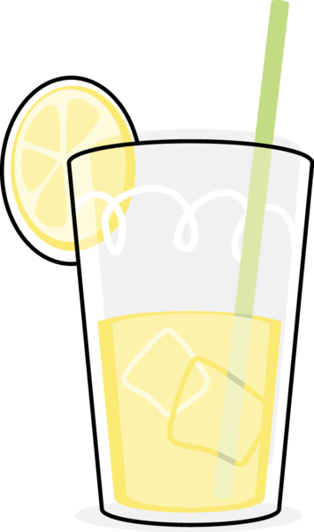
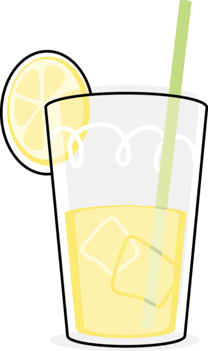
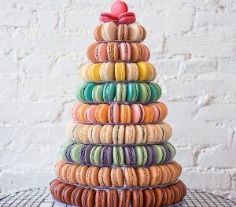

Baka med Olivia

 

Havreflarn
Havreflarn är perfekt till fikat och är lätta att laga. det fungerar lika bra att äta bara som det är eller andvända som tuggmotstånd i efterätter.Den innehåller smör, socker, sirap, och havregryn, vissa recept innehåller vispgrädde och ingefära. ingefäran är ett smart tips för att få mer smak samt doft.
Macarons

Macarons är söta små bakverk som ursprungligen är från Frankrike.
den består av äggvita, florsocker, stosöcker, mandelpulver och karamellfärg.
den har en top och en botten och i mellan fylls den oftast med ganache eller sylt.
Hallongrottor
Hallongrottor eller syltkakor som det även kallas är en lättbakad kaka.
En vanilj smakande kaka med sylt i mitten.
Den består av smör, socker, vetemjöl, marsanpulver, bakpulver och vilken sylt du än vill ha
. Den är både söt och knaprigt i smaken.
Biskvier
Beskvier är en bakelse gjord på en socker och mandelbotten, fylld med smörkräm som du själv kan smaksätta och sen sist täckt av ett lager med mörk choklad. Ett mäktigt bakverk som nästan är lite för stort som fika.